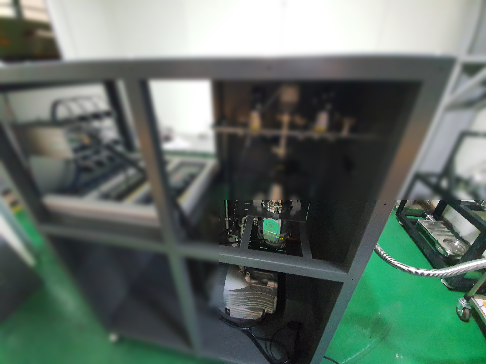
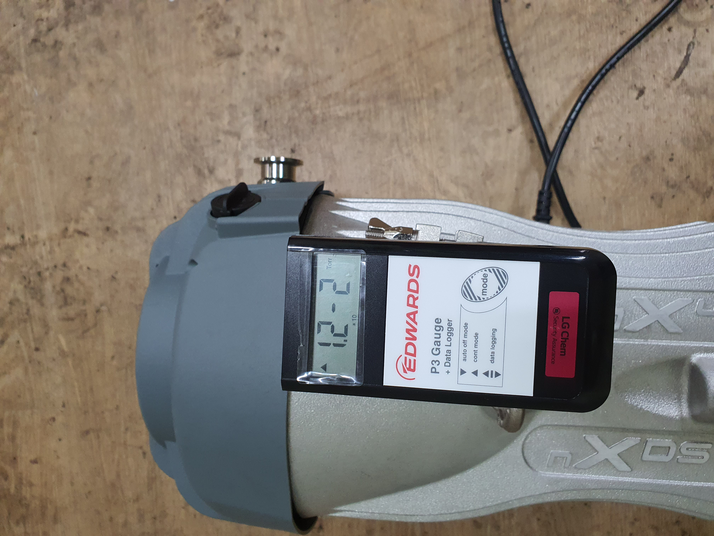
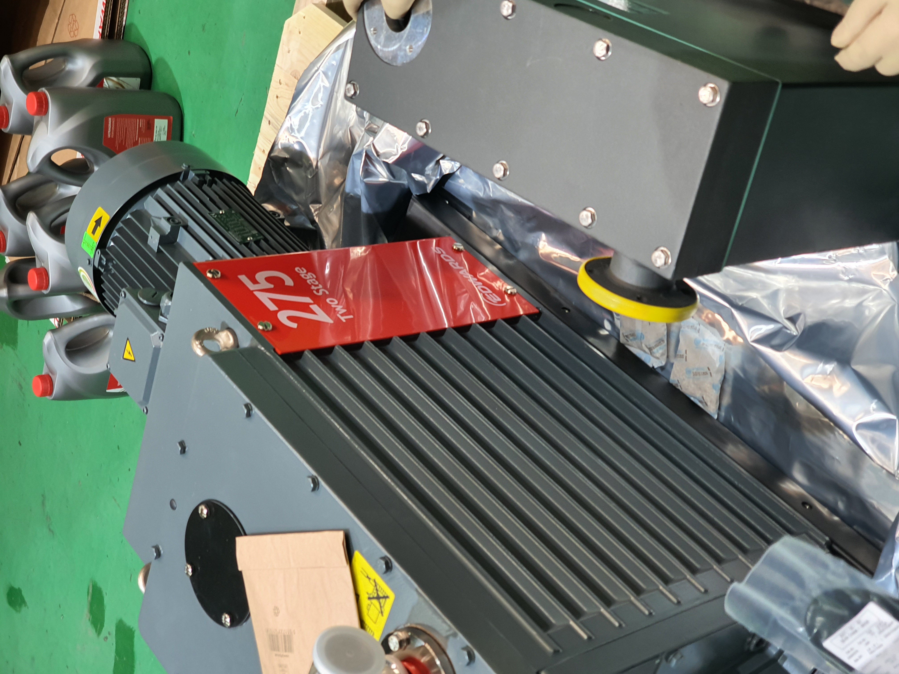
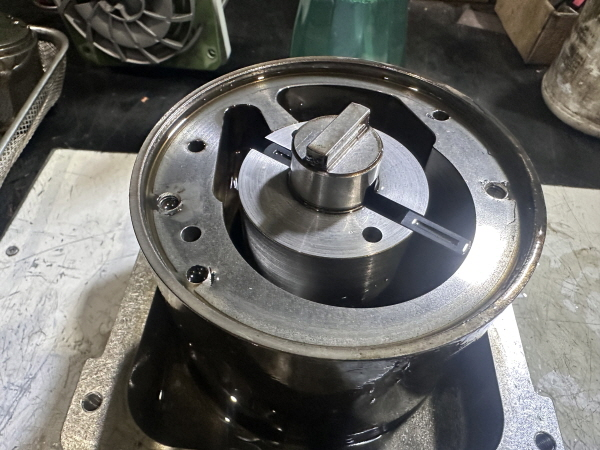

진공펌프 수리, 막상 시작하려면 어디서부터 손을 대야 할지 막막하지 않으셨나요? 순서를 지키지 않으면 작은 문제가 큰 고장으로 번질 수 있습니다. 30년 이상 Edwards 진공펌프를 전문으로 다뤄온 스마텍의 현장 경험을 바탕으로, 수리 전·중·후 반드시 지켜야 할 핵심 주의사항을 정리했습니다.

진공펌프 수리의 첫 번째 원칙은 전원 완전 차단입니다. 단순히 스위치를 끄는 것으로는 부족합니다. 국제 안전 기준(Lockout/Tagout, LOTO)에 따라 차단기를 잠그고 "유지보수 중" 태그를 부착해야 예기치 않은 재가동을 막을 수 있습니다.
전원을 끊은 뒤에는 최소 1시간 이상 펌프를 식혀야 합니다. Edwards 공식 서비스 문서에서도 로터리 베인 펌프는 작동 중 상당한 열을 발생시키므로 충분히 냉각된 후에야 분해에 들어가야 한다고 명시하고 있습니다. 뜨거운 상태에서 분해하면 오일이 튀거나 화상을 입을 위험이 있습니다.
무작정 펌프를 열기 전에 원인을 파악하는 것이 순서입니다. 원인 없이 분해하면 멀쩡한 부품까지 손상될 수 있습니다.
현장에서 활용하는 주요 점검 항목은 다음과 같습니다.
| 점검 항목 | 판단 기준 |
|---|---|
| 진공도 측정 | 200~500 micron → 오일 교체 시기 / 1000 micron 이상 → 내부 수리 필요 |
| 오일 상태 | 검게 변색, 유화, 이물질 혼입 여부 확인 |
| 누설 여부 | 본체·연결부·배관 오일·가스 누설 점검 |
| 소음·진동 | 금속 마찰음, 이상 진동 발생 여부 |
| 모터 상태 | 표면 손상·부식 여부 |
진공 게이지 수치가 1000 micron 이상이라면 내부 베인·베어링·씰 손상 가능성이 높으므로 전문 업체 수리를 검토하시는 것이 합리적입니다.

진공펌프는 공정 가스, 부식성 화학물질, 독성 증기를 처리하는 경우가 많습니다. 수리 시 이런 물질이 직접 노출될 수 있어 보호 장비 착용이 필수입니다.
반드시 착용해야 할 보호 장비(PPE):
특히 수소 등 가연성 가스를 처리하던 펌프는 분해 시 산소와 접촉해 폭발 위험이 생길 수 있습니다. Edwards 안전 설명서는 이 경우 불활성 가스(질소 등)로 내부를 퍼지한 뒤 분해할 것을 권고하고 있습니다. 또한 수리 중 펌프 배기를 실내로 그대로 방출하지 않도록 반드시 환기 덕트 쪽으로 유도해야 합니다.
오일은 로터리 베인 진공펌프 수리에서 가장 자주 다뤄야 하는 요소입니다. 순서를 지키지 않으면 내부 세척이 불완전해집니다.
오일 교체 4단계 절차:
반드시 지켜야 할 금지 사항:
스마텍에서는 Edwards 전용 오일(Ultra19)을 공급하고 있으며, 지정 오일 외 사용 시 발생하는 손상은 수리 보증에서 제외됩니다.

분해 순서를 기록하지 않고 작업하면 재조립 시 실수가 반드시 발생합니다. 현장에서 가장 흔하게 보는 실수가 바로 이 부분입니다.
재조립 실수를 막는 핵심 원칙:

수리가 끝났다고 바로 풀가동하면 안 됩니다. 반드시 시운전과 검증 절차를 거쳐야 합니다.
수리 후 필수 검증 4단계:
자가 수리가 가능한 범위는 생각보다 좁습니다. 아래 기준으로 판단하시기 바랍니다.
자가 수리 가능 범위:
전문 업체 수리가 필요한 경우:
스마텍은 Edwards 코리아 공식 대리점으로, 특수 측정 장비와 30년 이상의 현장 경험을 바탕으로 수리 후 시운전 및 검증 절차를 포함한 완전한 서비스를 제공합니다. 수리 견적서 발행과 A/S 보증 기간도 명확히 안내드립니다.
진공펌프 수리가 필요하시거나 궁금한 점이 있으시면 언제든지 연락 주시기 바랍니다.
031-204-7170 / www.smartechvacuum.com